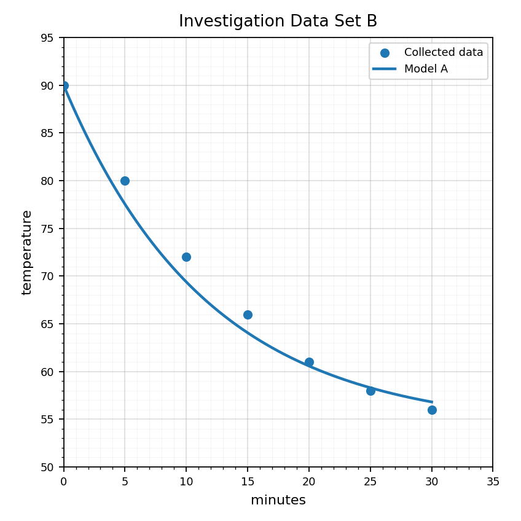
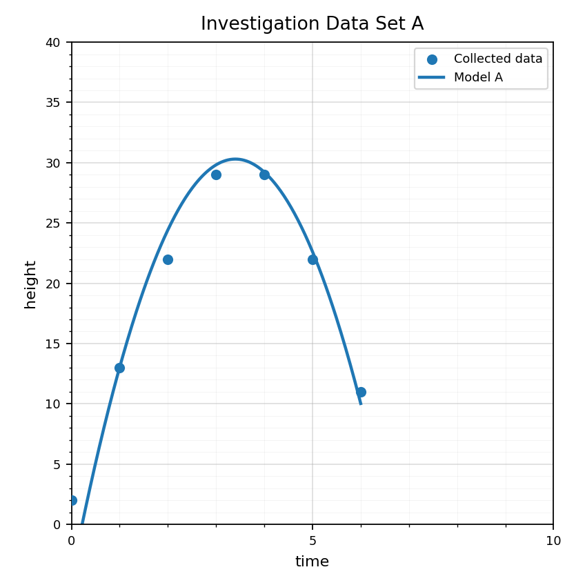
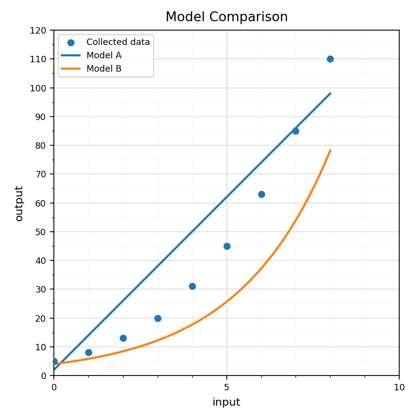
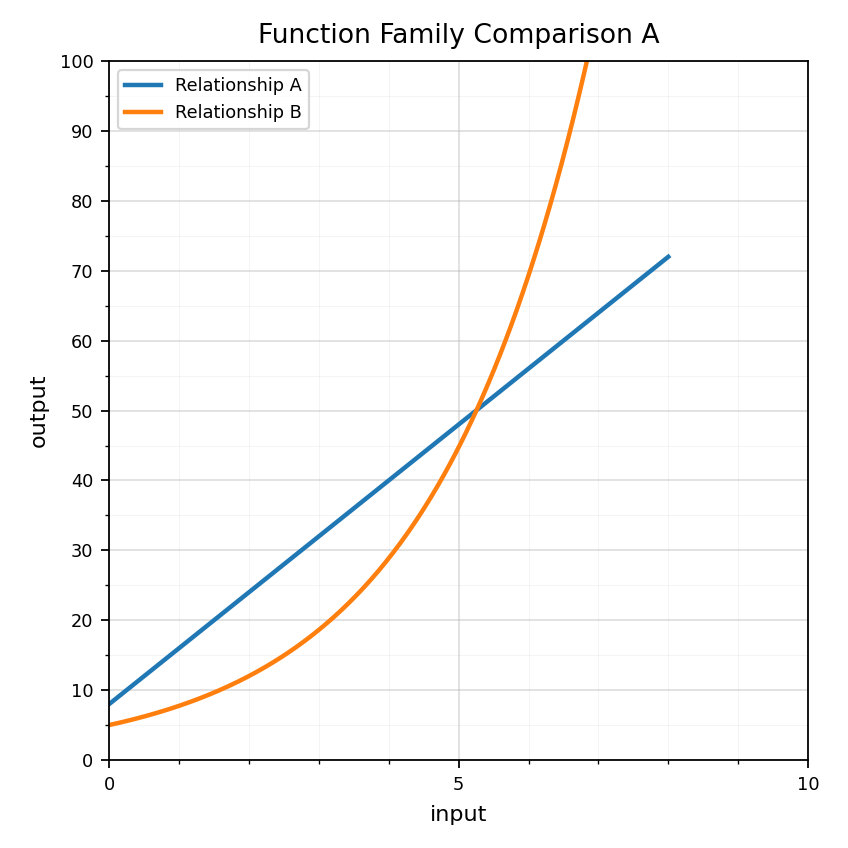
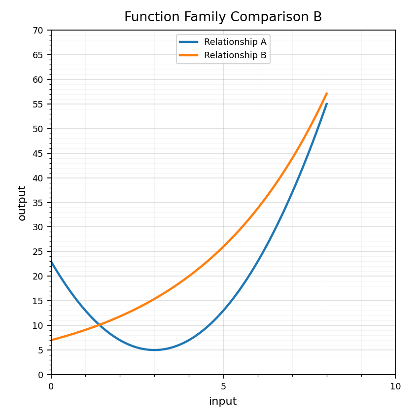

Extra Practice: This is a section-aligned spiral: 8.4 with 7.4 and 6.4. It is not a previous-section spiral.
Use Data Set B. Identify the input and output variables.

Use Data Set A. Propose a model type and give two pieces of evidence.

A model fits the displayed data well but predicts negative temperatures after a long time. Explain why the model may still be useful and why it has limits.
Use the model comparison graph to write a recommendation. Your recommendation must cite evidence and discuss limitations.

Classify each equation as linear, quadratic, or exponential: $y=6x+2$, $y=(x-1)^2+4$, $y=9(1.3)^x$.
Use the graph. Which relationship has constant rate of change? Explain what you looked for.

Which table could represent a quadratic relationship?
| x | 0 | 1 | 2 | 3 | 4 |
|---|---|---|---|---|---|
| A | 2 | 4 | 8 | 16 | 32 |
| B | 3 | 6 | 11 | 18 | 27 |
State whether "doubles every week" suggests a linear, quadratic, or exponential model.
Use the graph to compare the early behavior and later behavior of Relationship A and Relationship B.

For $f(x)=2x+10$ and $g(x)=4(1.5)^x$, evaluate both at $x=0$, $x=3$, and $x=6$.
Defend which function family is more appropriate for modeling a population that grows by a percent each year.
Design a mini card sort with three cards: one table, one equation, and one context. They should all represent the same function family. Explain the match.
Which method would you choose for $x^2-16=0$? Explain why.
Choose an efficient method and solve: $$2x^2-8x=0$$
A student uses the quadratic formula for $x^2-25=0$. Is the method wrong, inefficient, or both? Explain.
Give one quadratic equation where factoring is efficient and one where the quadratic formula is more reliable. Explain each choice.